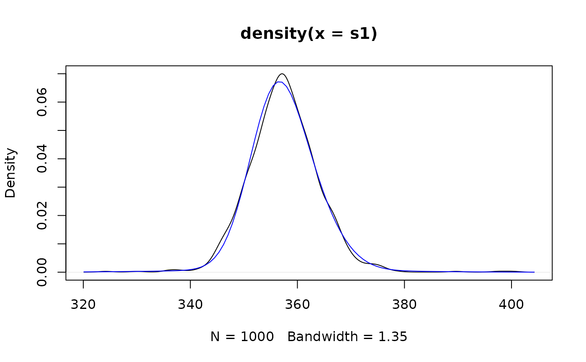

Simulate from MixAR models
mixAR_sim.RdSimulate from MixAR models
Usage
mixAR_sim(model, n, init, nskip = 100, flag = FALSE)
mixAny_sim(model, n, init, nskip=100, flag = FALSE,
theta, galpha0, galpha, gbeta)Arguments
- model
model from which to simulate, an object inheriting from class
MixAR.- init
initial values, numeric vector.
- n
size of the simulated series.
- nskip
number of burn-in values, see Details.
- flag
if
TRUEreturn also the regimes.- theta
ma coef, a list.
- galpha0
alpha0[k], k=1,...,g.
- galpha
garch alpha.
- gbeta
garch beta.
Details
mixAR_sim simulates a series of length nskip+n and
returns the last n values.
mixAny_sim simulates from a MixAR model with GARCH
innovations. mixAny_sim was a quick fix for Shahadat and needs
consolidation.
The vector init provides the initial values for
\(t=...,-1,0\). Its length must be at least equal to the maximal AR
order. If it is longer, only the last max(model@order) elements
are used.
Examples
exampleModels$WL_ibm
#> An object of class "MixARGaussian"
#> Number of components: 3
#> prob shift scale order ar_1 ar_2
#> Comp_1 0.5439 0 4.8227 2 0.6792 0.3208
#> Comp_2 0.4176 0 6.0082 2 1.6711 -0.6711
#> Comp_3 0.0385 0 18.1716 1 1.0000
#>
#> Distributions of the error components:
#> standard Gaussian
#>
## simulate a continuation of BJ ibm data
ts1 <- mixAR_sim(exampleModels$WL_ibm, n = 30, init = c(346, 352, 357), nskip = 0)
# a simulation based estimate of the 1-step predictive distribution
# for the first date after the data.
s1 <- replicate(1000, mixAR_sim(exampleModels$WL_ibm, n = 1, init = c(346, 352, 357),
nskip = 0))
plot(density(s1))
# load ibm data from BJ
## data(ibmclose, package = "fma")
# overlay the 'true' predictive density.
pdf1 <- mix_pdf(exampleModels$WL_ibm, xcond = as.numeric(fma::ibmclose))
curve(pdf1, add = TRUE, col = 'blue')

# estimate of 5% quantile of predictive distribution
quantile(s1, 0.05)
#> 5%
#> 347.3871
# Monte Carlo estimate of "expected shortfall"
# (but the data has not been converted into returns...)
mean(s1[ s1 <= quantile(s1, 0.05) ])
#> [1] 344.1838